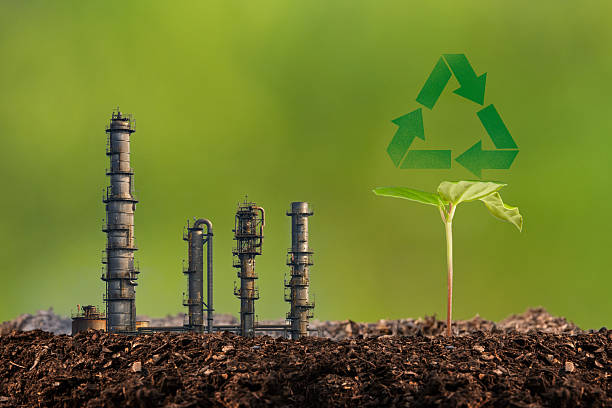
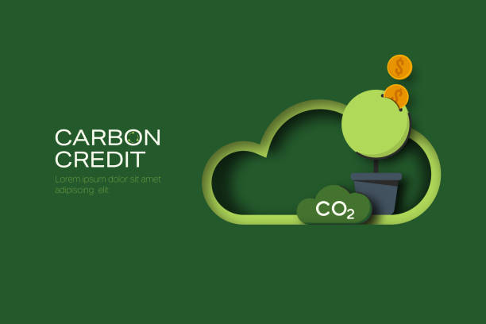

PROJECTS

Innovative Solutions
Transforming Waste Plastics into Value
Converted plastic waste into renewable diesel for ghanaian industries
TerraSol Energy Industries successfully converted 1200MT of plastic waste into 720,000 liters of ultra-low sulfur diesel. This innovative project utilized cutting-edge pyrolysis technology, helping to tackle Ghana's pressing plastic pollution problem while providing a sustainable fuel alternative for local industries. By implementing this scalable solution, TerraSol not only contributed to Ghana's industrialization efforts but also significantly reduced CO₂ emissions by an impressive 1.2 million MT annually. This initiative exemplifies our commitment to fostering a cleaner environment while supporting economic growth in the region. Transforming plastic waste into diesel fuels Ghana's industries sustainably.

Implemented pyrolysis technology to reduce plastic pollution
Pioneering technology to convert waste into renewable energy in Ghana.
In a groundbreaking initiative, TerraSol Energy Industries implemented advanced pyrolysis technology to convert plastic waste into renewable diesel. This project directly addresses the critical issue of plastic pollution in Ghana, providing an eco-friendly alternative to fossil fuels while generating significant carbon credits. With the capacity to process large volumes of plastic, this operation not only contributes to environmental sustainability but also aligns with global sustainability goals. The success of this project underscores TerraSol's role as a leader in the clean energy sector, driving innovation and change in the fight against plastic waste.
